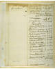
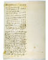
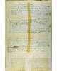

The Official Story
Introduction
Indictment for an Assault
In July of 1790, we find in the records of the Supreme Judicial Court that Joseph North plead "not guilty" when charged with the "intent to ravish and carnally know" Rebecca Foster. She was the wife of the Reverend Mr. Isaac Foster, minister of Hallowell's Congregational Church. And North was the local judge.The case was heard at the imposing, three-story Pownalboro Courthouse, located south of Hallowell on the Kennebec River. All that remains in the court record is the verdict, the formal indictment, the witness list, and the expense reports detailing the costs of transportation, sherriff's fees, and serving writs. None of the testimony survives.
How did it come to pass that Judge North was tried for the rape of the minister's wife? To figure this out, you can explore the official town, court, and church records to piece together the story of the Reverend Mr. Isaac Foster's move to Hallowell, his relation to the townspeople, and Judge North's role in Reverend Foster's feud with the town's clerk, Henry Sewall.
| What did Martha have to say about this? |

| next |
It all began with the hiring of Mr. Foster, four years before the trial of Judge North... |
| Foster v. North Supreme Judicial Court July 1790 |
View Image View Frames version |
| Witnesses' Expenses | Judges' Expenses | Jurors' Expenses |
 |
 |
 |
|
Witnesses' Expense Report |
|
||||||||||||||||||||||||||||||||||||||||||||||||||||||||||||||||||||||||||||||||||||||
|
|||||||||||||||||||||||||||||||||||||||||||||||||||||||||||||||||||||||||||||||||||||||
|
|
|||||||||||||||||||||||||||||||||||||||||||||||||||||||||||||||||||||||||||||||||||||||